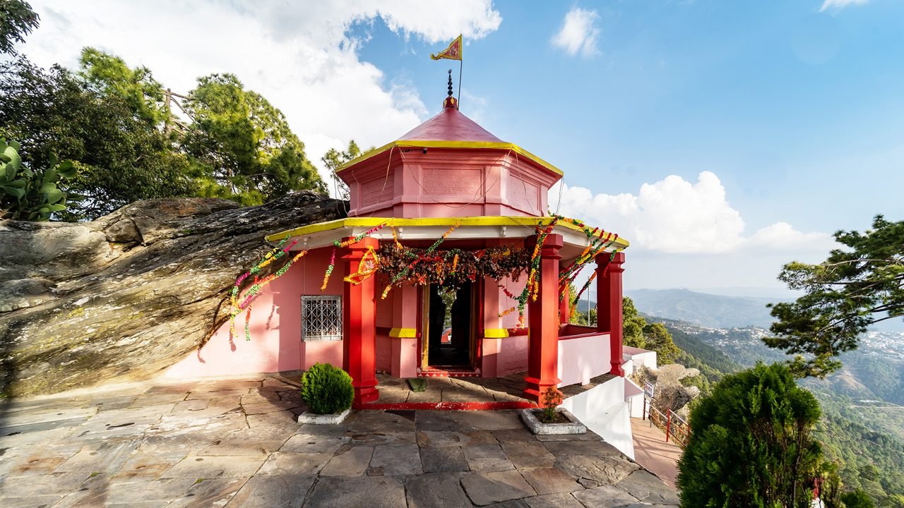
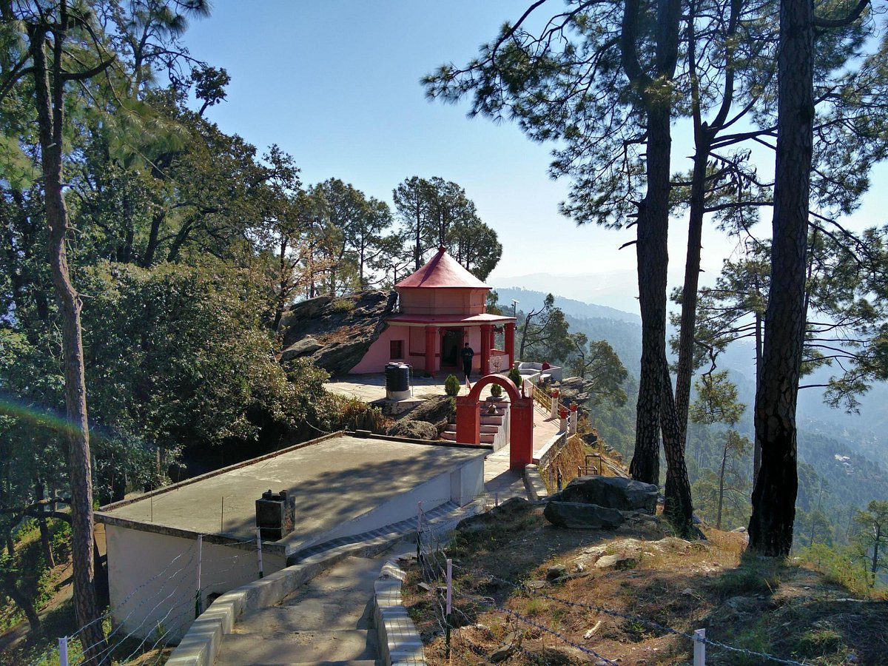
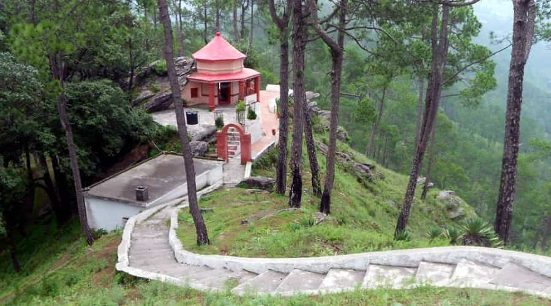
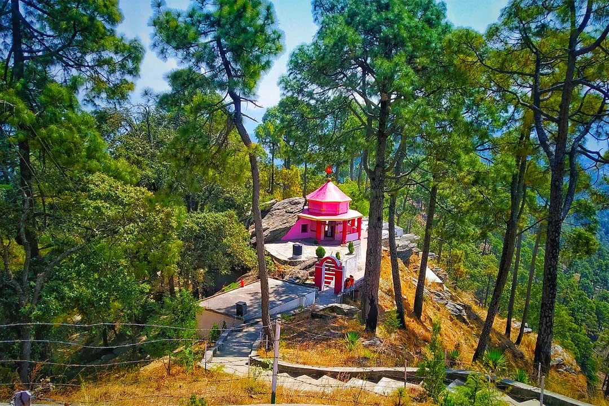

Kasar Devi Temple (also known as Crank's Ridge or Hippie Temple) is one of the most spiritually charged and scenic temples in Almora, perched at an altitude of about 2,000 meters on the Himalayan ridge overlooking the Kumaon valley. Dedicated to Goddess Kasar Devi (an incarnation of Goddess Parvati), the temple is believed to be over 2,000 years old and is famous for its powerful cosmic energy. The location is said to lie on one of the world's rare "Van Allen Belt" magnetic fields, attracting seekers, meditators, hippies, and celebrities (like Bob Dylan, Cat Stevens, and Swami Vivekananda is believed to have meditated here).
The temple complex is simple yet profoundly peaceful, with a small stone shrine, ancient banyan tree, prayer flags fluttering in the mountain breeze, and breathtaking panoramic views of snow-capped peaks including Trishul, Nanda Devi, and Panchachuli. The serene atmosphere, fresh pine-scented air, and spiritual vibe make it a favorite spot for meditation, yoga, and inner reflection. Nearby Crank's Ridge (once a hippie colony) adds a bohemian charm to the place, blending ancient faith with modern spiritual seekers.
April to June and September to November for clear skies and stunning Himalayan views; early morning for peaceful meditation and sunrise energy.
Powerful cosmic energy spot, ancient temple on magnetic ridge, panoramic views of Trishul-Nanda Devi, prayer flags, banyan tree, and serene meditation vibe.
Wear warm clothes (cool even in summer), carry water & light snacks, respect the silence for meditation, walk barefoot if comfortable, and visit Crank's Ridge cafes nearby for a chill vibe.
"Kasar Devi Temple is where the mountains meet the divine — a sacred ridge vibrating with ancient peace, cosmic energy, and the quiet call of the soul in the heart of Kumaon."